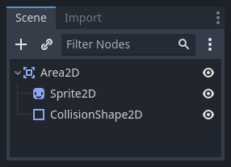

Sử dụng Area2D
Giới thiệu
Godot cung cấp nhiều collision object để hỗ trợ cả phát hiện va chạm lẫn phản hồi va chạm. Việc chọn dùng loại nào cho dự án có thể gây bối rối. Bạn có thể tránh được vấn đề và đơn giản hóa việc phát triển nếu hiểu cách mỗi loại hoạt động cũng như ưu nhược điểm của chúng. Trong bài hướng dẫn này, chúng ta sẽ xem xét node Area2D và đưa ra một số ví dụ về cách sử dụng nó.
Ghi chú
Tài liệu này giả định bạn đã quen với các loại physics body của Godot. Vui lòng đọc Giới thiệu về vật lý trước.
Area là gì?
Area2D định nghĩa một vùng trong không gian 2D. Trong vùng này, bạn có thể phát hiện các node CollisionObject2D khác chồng lấn, đi vào và đi ra. Area cũng cho phép ghi đè các thuộc tính vật lý cục bộ. Chúng ta sẽ tìm hiểu từng chức năng này bên dưới.
Thuộc tính của area
Area có nhiều thuộc tính bạn có thể dùng để tùy chỉnh hành vi của nó.

Các mục Gravity, Linear Damp và Angular Damp được dùng để cấu hình hành vi ghi đè vật lý của area. Chúng ta sẽ xem cách dùng chúng trong mục Ảnh hưởng của area bên dưới.
Monitoring và Monitorable được dùng để bật và tắt area.
Mục Audio Bus cho phép bạn ghi đè âm thanh trong area, ví dụ để áp dụng hiệu ứng âm thanh khi người chơi đi qua.
Lưu ý rằng Area2D kế thừa CollisionObject2D, nên nó cũng cung cấp các thuộc tính kế thừa từ lớp đó. Mục Collision của CollisionObject2D là nơi bạn cấu hình collision layer và mask của area.
Phát hiện chồng lấn
Có lẽ cách dùng phổ biến nhất của node Area2D là phát hiện tiếp xúc và chồng lấn. Khi bạn cần biết hai đối tượng đã chạm nhau nhưng không cần va chạm vật lý, bạn có thể dùng area để được thông báo về tiếp xúc đó.
Ví dụ, giả sử chúng ta đang làm một đồng xu để người chơi nhặt. Đồng xu không phải vật rắn - người chơi không thể đứng trên hay đẩy nó - chúng ta chỉ muốn nó biến mất khi người chơi chạm vào.
Đây là cấu trúc node cho đồng xu:

Để phát hiện chồng lấn, chúng ta sẽ kết nối signal phù hợp trên Area2D. Dùng signal nào tùy thuộc vào loại node của người chơi. Nếu người chơi là một area khác, hãy dùng area_entered. Tuy nhiên, giả sử người chơi của chúng ta là một CharacterBody2D (và do đó thuộc kiểu CollisionObject2D), nên chúng ta sẽ kết nối signal body_entered.
Ghi chú
Nếu bạn chưa quen dùng signal, xem Sử dụng signal để được giới thiệu.
extends Area2D
func _on_coin_body_entered(body):
queue_free()
using Godot;
public partial class Coin : Area2D
{
private void OnCoinBodyEntered(PhysicsBody2D body)
{
QueueFree();
}
}
Giờ người chơi của chúng ta đã có thể nhặt đồng xu!
Một số ví dụ sử dụng khác:
Area rất phù hợp cho đạn và các loại vật phóng khác va trúng và gây sát thương nhưng không cần vật lý nào khác như nảy bật.
Dùng một area hình tròn lớn quanh kẻ địch để xác định bán kính "phát hiện" của nó. Khi người chơi ở ngoài area, kẻ địch không thể "nhìn thấy" người chơi.
"Camera an ninh" - Trong một màn chơi lớn có nhiều camera, hãy gắn area vào mỗi camera và kích hoạt chúng khi người chơi đi vào.
Xem Game 2D đầu tiên của bạn để có ví dụ dùng Area2D trong một game.
Ảnh hưởng của area
Cách dùng chính thứ hai của node area là thay đổi vật lý. Theo mặc định, area sẽ không làm điều này, nhưng bạn có thể bật nó bằng thuộc tính Space Override. Khi các area chồng lấn nhau, chúng được xử lý theo thứ tự Priority (area có độ ưu tiên cao hơn được xử lý trước). Có bốn tùy chọn ghi đè:
Combine - Area cộng các giá trị của nó vào những gì đã được tính đến thời điểm đó.
Replace - Area thay thế các thuộc tính vật lý, và các area có độ ưu tiên thấp hơn bị bỏ qua.
Combine-Replace - Area cộng các giá trị trọng lực/giảm chấn của nó vào những gì đã được tính đến thời điểm đó (theo thứ tự ưu tiên), bỏ qua mọi area có độ ưu tiên thấp hơn.
Replace-Combine - Area thay thế mọi giá trị trọng lực/giảm chấn đã được tính đến thời điểm đó, nhưng vẫn tiếp tục tính các area còn lại.
Với các thuộc tính này, bạn có thể tạo ra hành vi rất phức tạp với nhiều area chồng lấn.
Các thuộc tính vật lý có thể ghi đè là:
Gravity - Độ mạnh của trọng lực bên trong area.
Gravity Direction - Vector này không cần được chuẩn hóa.
Linear Damp - Tốc độ vật thể ngừng di chuyển - lượng vận tốc tuyến tính mất đi mỗi giây.
Angular Damp - Tốc độ vật thể ngừng xoay - lượng vận tốc góc mất đi mỗi giây.
Trọng lực điểm
Thuộc tính Gravity Point cho phép bạn tạo một "điểm hút". Trọng lực trong area sẽ được tính hướng về một điểm, xác định bởi thuộc tính Point Center. Các giá trị là tương đối so với Area2D, nên ví dụ dùng (0, 0) sẽ hút các vật thể về tâm của area.
Ví dụ
Dự án ví dụ đính kèm bên dưới có ba area minh họa việc ghi đè vật lý.

Bạn có thể tải dự án này tại đây: area_2d_starter.zip